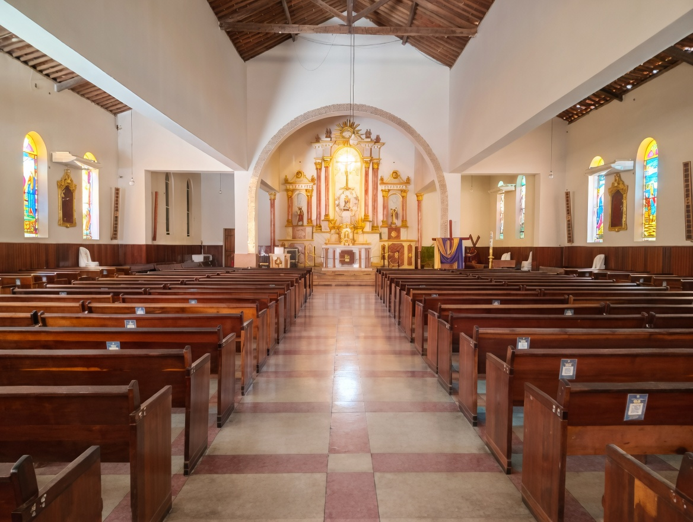

A Igreja Matriz
A Igreja Matriz de Nossa Senhora do Livramento é o coração espiritual de Arcoverde. Sua história confunde-se com o próprio crescimento da cidade. Erguida com a fé e o esforço da comunidade, a paróquia tornou-se o principal marco arquitetônico e religioso da região.
Desde os primeiros tijolos até a imponente estrutura que vemos hoje, cada detalhe da Matriz conta uma trajetória de devoção que atravessa gerações, mantendo viva a chama da fé no Sertão do Moxotó.

COMO ERA ANTES

DIAS ATUAIS
Santa Missa
Terça-feira
19h
Matriz do Livramento
Domingo
09h e 19h
Matriz do Livramento